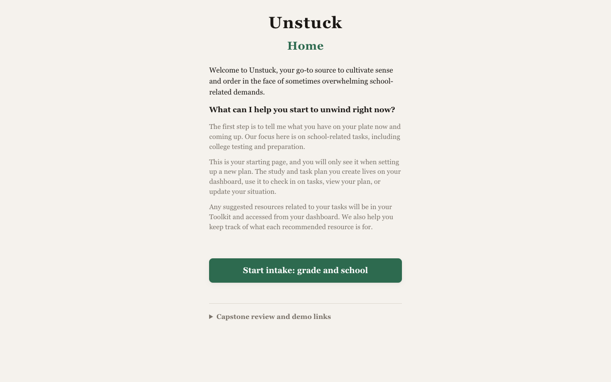
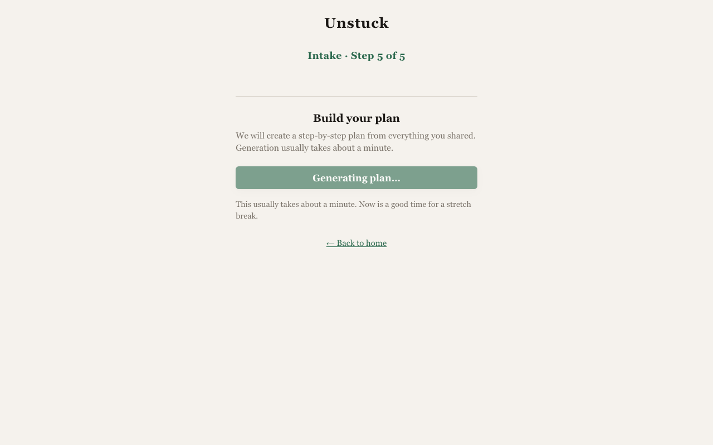
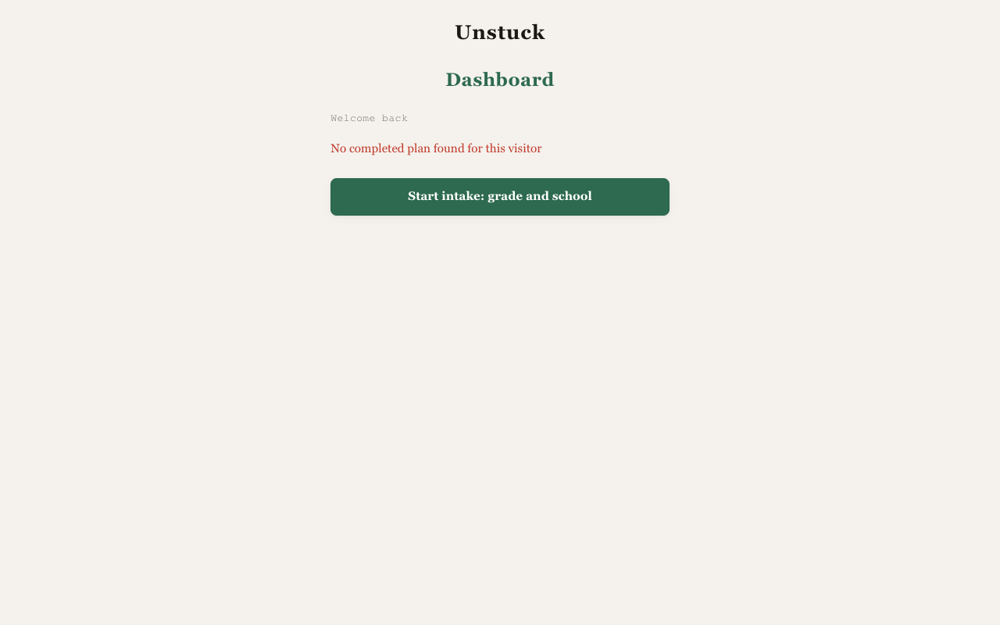
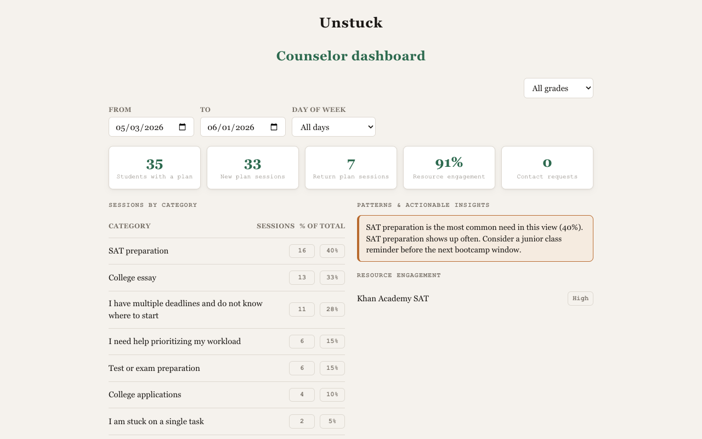
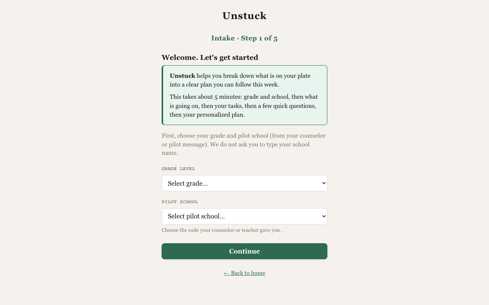
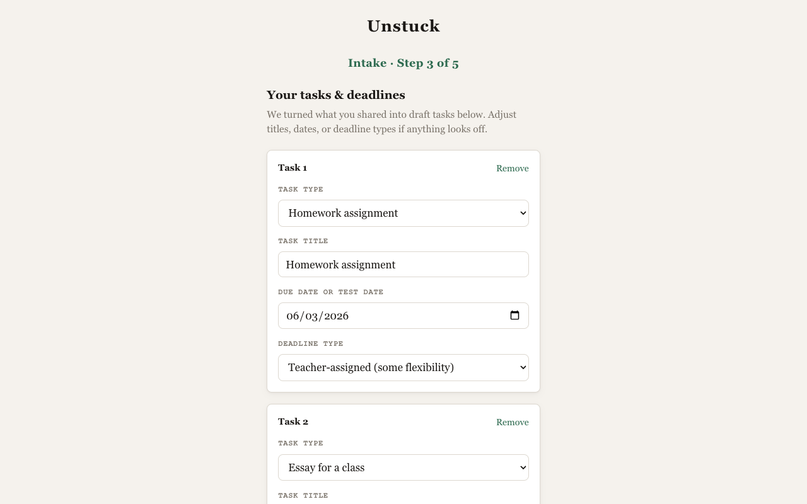
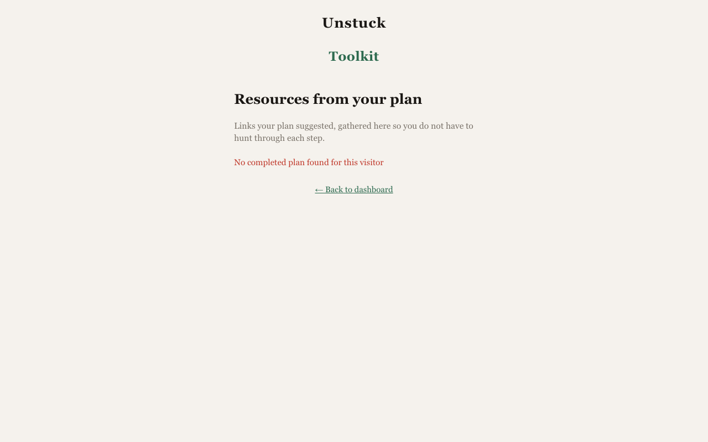

AI planning for students who do not know where to start
Teri Campbell · Product Faculty · AI PM Cohort 9 · Builder · May 2026

“Build it. My daughter needs this now.” — pilot friend
372:1
Students per counselor nationally (ASCA recommends 250:1)
Structured intake → time-aware plan → one next action at a time. Toolkit + check-in keep momentum.
Counselor dashboard: anonymized aggregates — themes and resource use, not surveillance.
Spec-driven AI with screening and allowlisted resources — not open chat.



| Intake + plan | No blank-page panic | Structured data for patterns |
| Dashboard + toolkit | Continuity across visits | Resource follow-through |
| Check-in | Low-friction weekly pulse | Early counselor signal |
| Safety + counselor view | Trust for minors | Institutional tier |



Production: unstuck-app-flame.vercel.app
Moat: configured pilot + historical aggregates.
App Wireframe Build spec Video — add Vimeo URL when ready
Use arrow keys or on-screen controls to move through slides. ← →